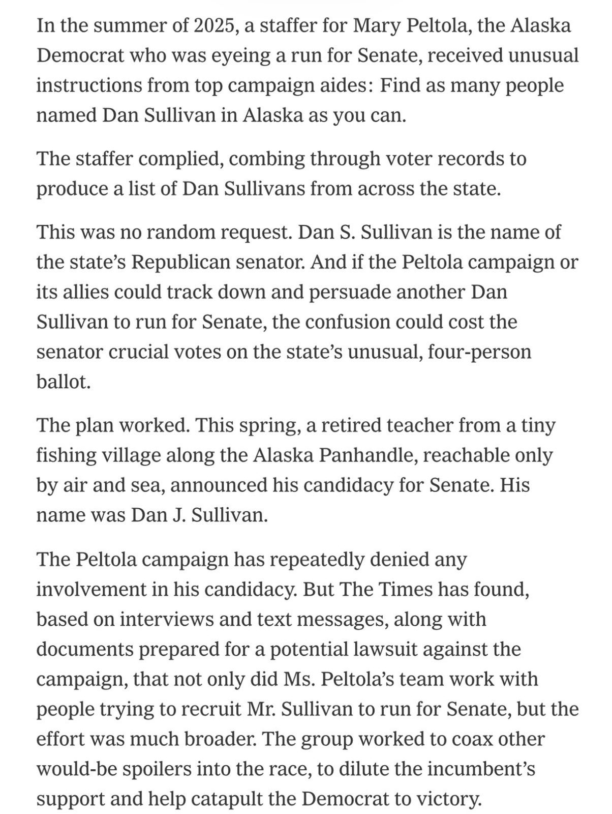
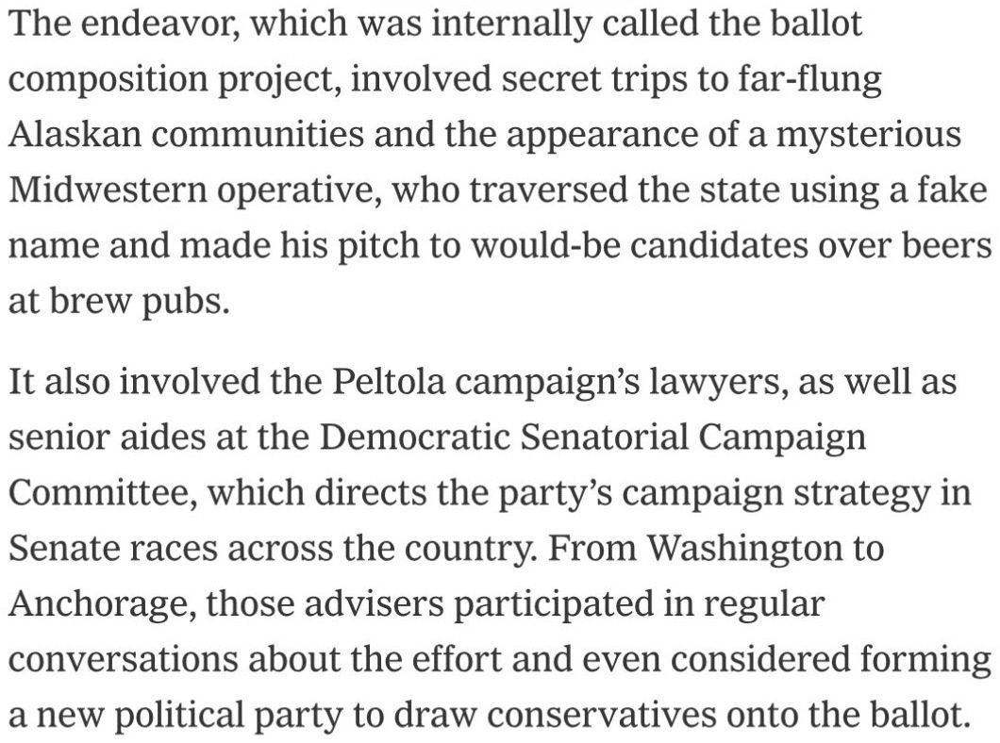
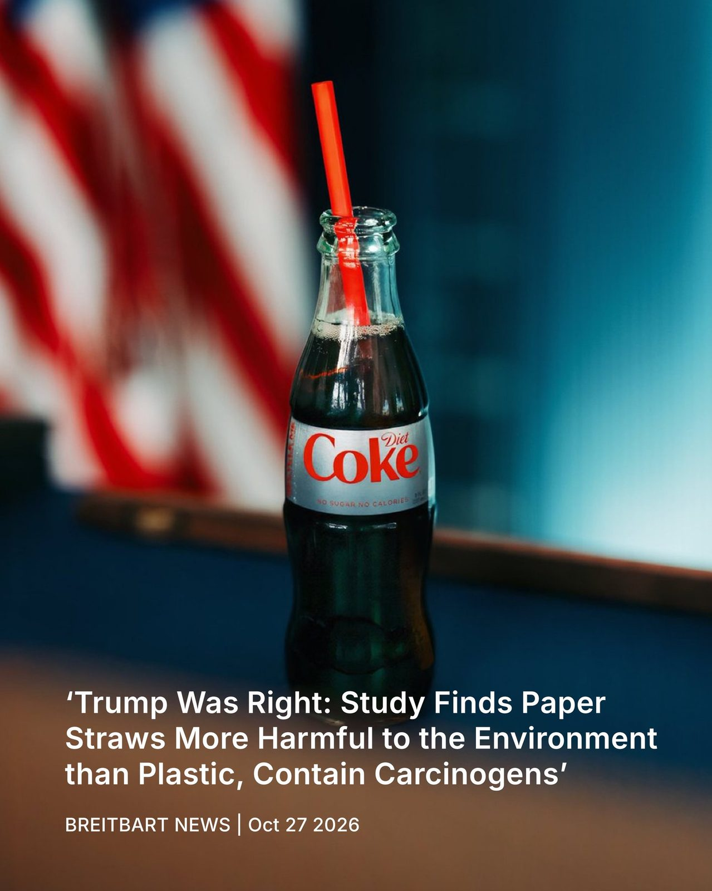
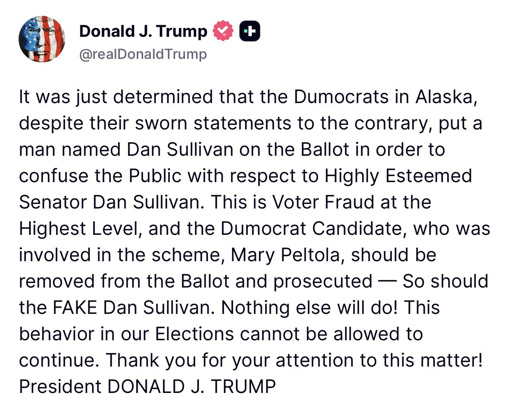
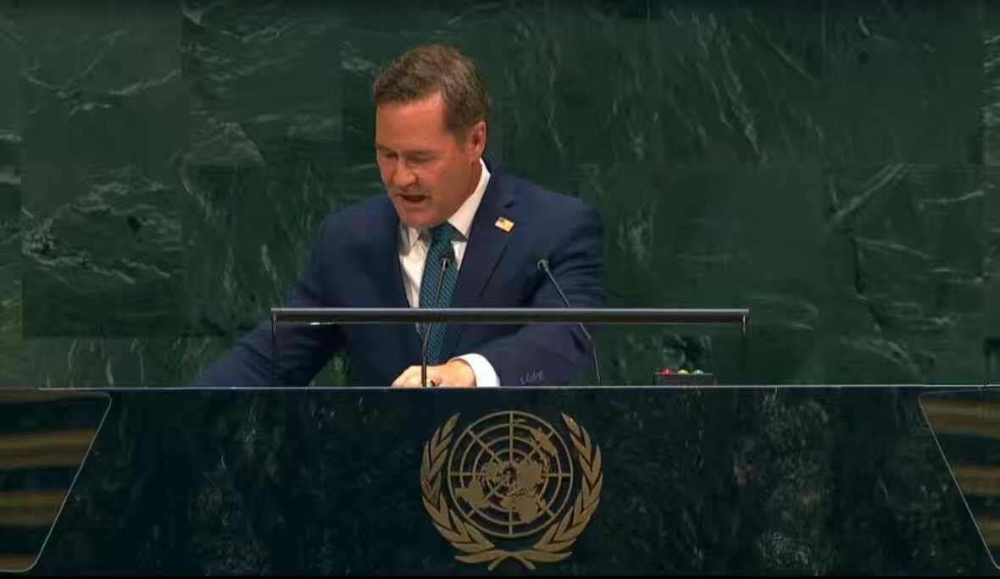
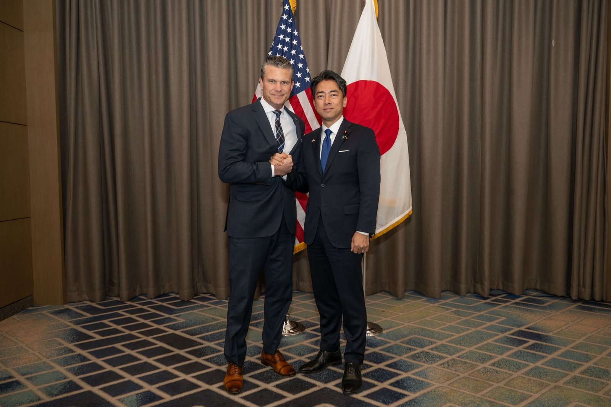
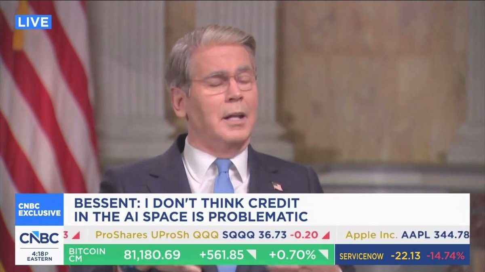
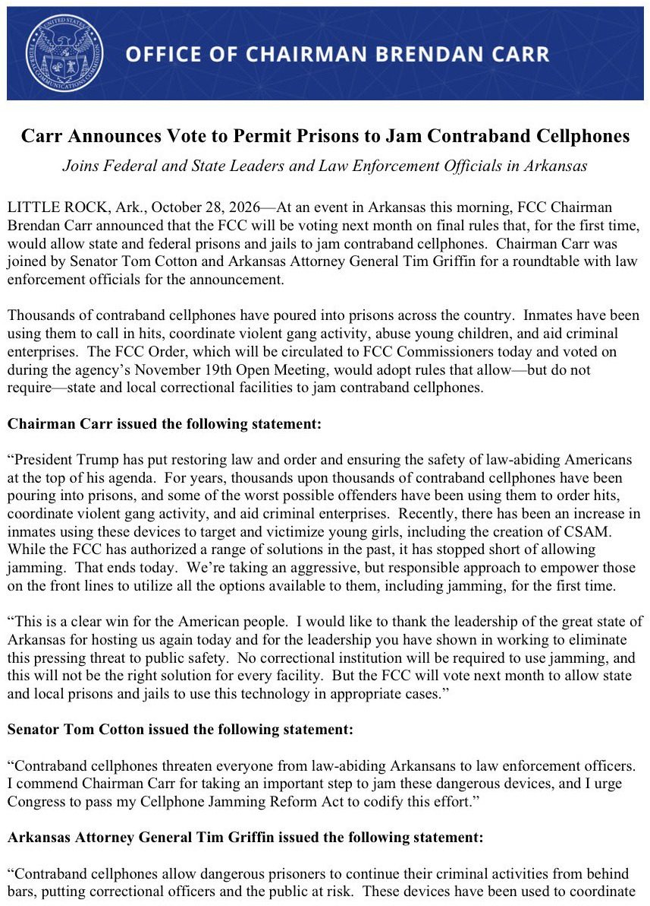
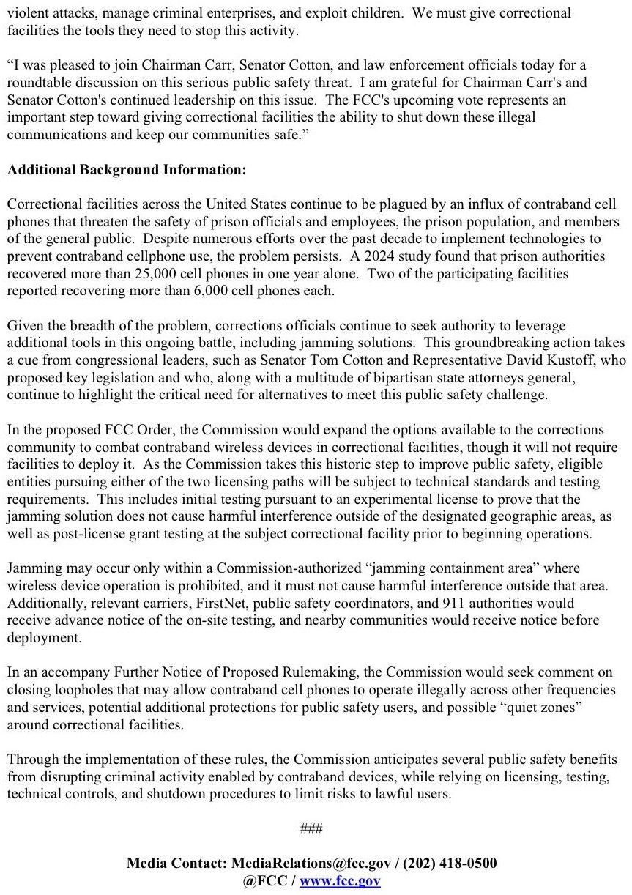
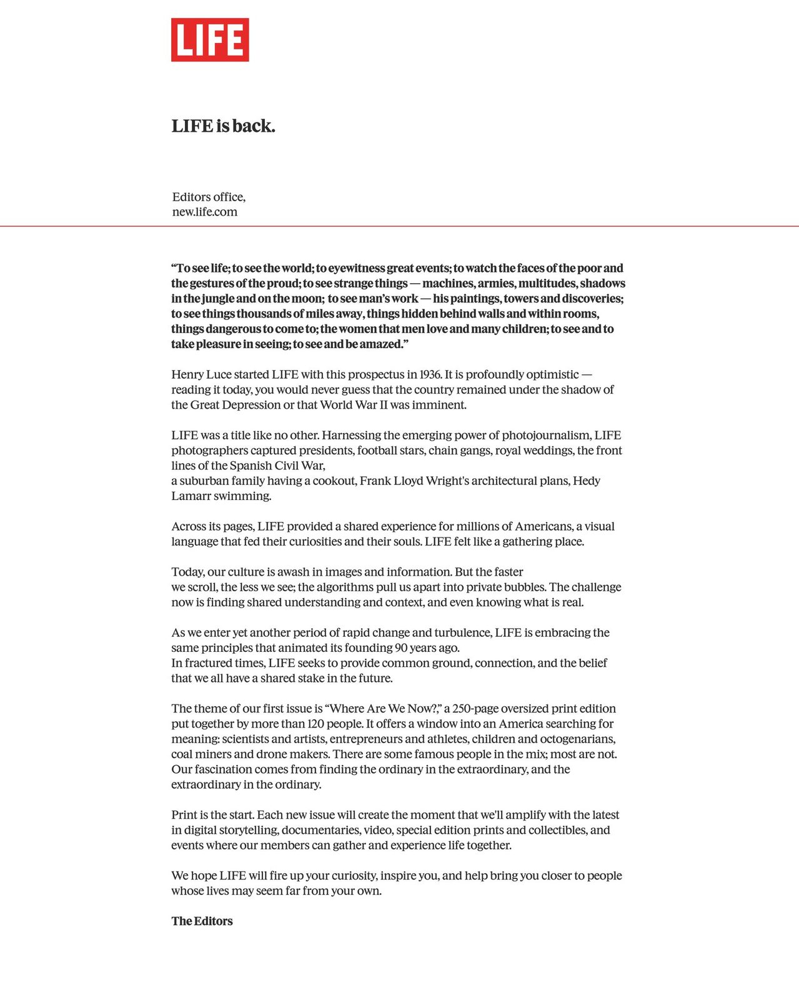

BREAKING: Fed Chair Warsh announces plans to overhaul the Fed's meeting schedule beginning in Fall 2027.
Under the new framework, one of the Fed's 8 annual meetings will focus on long-term strategy rather than voting on interest rates.
By 2028, Warsh expects just 6 interest rate-setting meetings per year, down from the current 8.
This will mark one of the biggest changes to the Fed's monetary policy process in decades.
More good news for $RLUSD this week - @moodysratings has assigned RLUSD an A2 long-term rating and P-1 short-term rating, the highest possible short-term rating under its new stablecoin framework.
TL;DR: RLUSD is the first stablecoin to have ever received an investment-grade Moody’s rating. This is one of the most respected independent credit rating agencies in the world, and a massive validation of the quality, transparency and institutional-grade infrastructure behind RLUSD.
Moody’s assessed everything from the credit quality and liquidity of @Ripple’s reserves to redemption arrangements, custody relationships, regulatory oversight, and operational controls in their rigorous methodology.
As RLUSD continues to grow, this kind of independent validation matters more than ever. Moody’s has helped set the standard for assessing credit quality and risk across traditional finance for decades, and bringing that same level of assessment to stablecoins themselves is a major step forward for the industry.
Proud to see RLUSD helping set a new benchmark for institutional trust in stablecoins.
We're planning to integrate with @StellarOrg, bringing our regulated infrastructure to the fourth largest ecosystem for tokenized real-world assets.
The integration will enable us to support the issuance and management of tokenized financial assets on the Stellar network.
Ripple USD, meet Coinbase.
RLUSD is now supported on Coinbase and Coinbase Prime, with 1:1 conversion from USD.
More ways to move dollars onchain, inside the infrastructure institutions already use.
The DTCC Tokenization Service is now live, and this is only the beginning.
▶ Watch on X2026 marks Ripple’s best year ever. Last year, we set out to build the full stack of blockchain infrastructure, bolstered by native product growth and strategic M&A. This year, it’s all about integration, and the results speak for themselves.
Now, it’s time for @RippleSwell to take center stage: https://ripple.com/ripple-press/ripple-reports-banner-year-approaching-900m-product-revenue-run-rate-signs-multi-solution-partnerships/
Holy. Shit.
The NYT is reporting that despite their denials, Mary Peltola's staff and Democratic operatives flew all over Alaska in secret to find and recruit a man named Dan Sullivan.
They put him on the ballot to purposefully steal votes from Republican Dan Sullivan.


RFK: "There's five hundred million Arabs in the world. And yet they don't produce science. They don't win the Novel Prize. They don't win the Fields Prize. They don't win the Wolf Prize. They don't produce literature."
▶ Watch on XTRUMP WAS RIGHT: Study Finds Paper Straws More Harmful to the Environment than Plastic

Welcome to the Oval Office, Artemis III Crew! 🇺🇸🚀

The Castro regime has profited at the expense of the Cuban people with luxury cars, expensive watches and a private island resort. As I shared this with the world, regime thugs rushed the stage to interrupt my speech.
They can intimidate their own people in Cuba but think again about trying that nonsense in the United States of America.
One of the Cuban regime’s “diplomats” tried to intimidate UN staff into cutting our microphones as I exposed the regime for the world to see.
When one of my American diplomats noticed what was happening, that same regime “diplomat” tried to intimidate him, too.
▶ Watch on XCastro’s grandkids enjoy European vacations as Countless Cubans risk their lives on rafts fleeing the dire conditions of their country.

▶ Watch on XCuba’s Communist leaders don’t want you to know about their luxury real estate portfolio, but we have the receipts.
▶ Watch on XI met with Japan’s Minister of Defense Shinjirō Koizumi @shinjirokoiz to advance our shared vision of peace through strength.
Our strategic alignment is essential to building a credible denial defense—supported by increased investment, greater access, more realistic training, and stronger production of the munitions our forces need.

Productive meeting with counterparts from Australia, Japan, and the Philippines. Deterrence is built on real capability and ready partnerships.
We are moving beyond words to practical cooperation along the First Island Chain—bolstering readiness to ensure peace through strength.
.@POTUS on Iran: "It's a question of when do I want to end it... They've wanted to make a deal, but they like tapping it along. Maybe they're waiting for the election or something — but that's not gonna help them."
BREAKING: US and Israel are readying to launch heavy joint combat operations against Iran right after the midterm elections, with Trump leaning toward a large strike on Iranian nuclear and infrastructure targets immediately after November 3, per the WSJ.
It comes as Netanyahu said minutes ago during his speech "We will remove the Iranian threat forever in cooperation with President Trump."
JUST IN: 🇺🇸🇮🇷 US Vice President JD Vance reaches out to one of Iran's most powerful hard-liners to revive peace talks, WSJ reports.
.@SecScottBessent: “At the G20 in Asheville, North Carolina, in August, we pushed all the G20 members toward growth. We said that the biggest risk to financial stability is a lack of growth.”

▶ Watch on XJUST IN: Mark Cuban declares that the world's next trillionaire could be an entrepreneur using AI working from their basement
MAKING AMERICA SAFE AGAIN 🇺🇸
Today, I announced the FCC will vote to authorize prisons to jam contraband cellphones for the first time ever.
Almost 500,000 inmates now have access to them and 25,000 phones are seized in jails annually.
Inmates are using them at exceptionally high rates to order hits, run drug operations, enable CSAM abuse of young kids, and many more awful acts.
We are now giving state and local prisons & jails a tool they’ve been denied for years.
Grateful for the chance to get this across the finish line.


.@POTUS: "We're making a lot of progress with Russia-Ukraine. There'll be a meeting set up very soon."
The leaders of Finland and Norway call Russian President Vladimir Putin to urge him to end the war in Ukraine, breaking with a longstanding practice among Western European leaders of shunning direct contact with the Kremlin.
LIFE returns to print 11.23.26.

NEWSFLASH: Dominion CTO Eric Coomer’s libel case against me for saying Dominion’s equipment rigs elections was just thrown out by the judge on summary judgment. Trial was supposed to start next Wednesday, but the judge read our evidence and realized I was correct. No libel.
Kathy Hochul is an evil woman. The Democratic Party should forfeit her seat because even if she wins, she will be of great consequence to them. Downward spiral for her. She will not escape God’s wrath. She did not denounce evil when she had the chance.
BREAKING: Anthropic reveals it is developing its own experimental drugs using Claude, targeting rare childhood diseases & various cancers.
University of Nottingham scientists develop gel that regenerates tooth enamel in two weeks in lab tests.
🚨#BREAKING: Black student enrollment at Harvard has fallen nearly 50% since the Supreme Court banned affirmative action in 2023, dropping from 18% to just 9.3% of incoming freshmen.
#BREAKING: ICE is conducting one of the biggest spy operations on left-wing activists in history.
#BREAKING: Supreme Court won’t restore Biden-era rule allowing judges to stop deportation cases.
BREAKING: EU has dropped the idea of offering Canada "associate member" status